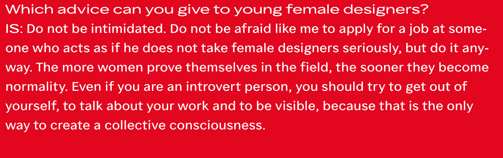

TINE KJØLSEN
tine mia tine mia tine mia tine mia tine mia tine mia tine mia tine mia tine mia tine mia tine mia tine mia tine mia
TINE KJØLSEN
tine mia tine mia tine mia tine mia tine mia tine mia tine mia tine mia tine mia tine mia tine mia tine mia tine mia tine mia tine mia
TINE KJØLSEN
tine mia tine mia tine mia tine mia tine mia tine mia tine mia tine mia tine mia tine mia tine mia tine
ELIAS WERNER
mia elias mia elias mia elias mia elias mia elias mia elias mia elias mia elias mia elias mia elias mia elias mia elias mia elias mia elias mia elias mia mia elias elias mia elias mia elias mia elias mia elias mia elias mia elias mia elias mia
ELIAS WERNER
elias mia elias mia elias mia elias mia elias mia elias mia mia elias mia elias mia elias mia elias mia elias mia elias mia elias mia elias mia elias mia elias mia elias mia elias mia elias mia elias mia elias mia elias mia elias mia
ELIAS WERNER
elias mia elias mia elias mia elias mia elias mia elias mia elias mia elias mia elias mia elias mia elias mia elias mia elias mia elias mia elias mia elias mia elias mia elias mia elias mia elias mia elias mia elias mia elias mia elias mia elias mia elias mia elias mia elias mia elias mia elias
JOSEFIN ASKFELT
josefin mia josefin mia josefin mia josefin mia josefin mia josefin mia josefin mia josefin mia josefin mia josefin mia josefin mia josefin mia josefin mia josefin mia josefin mia josefin mia josefin mia josefin mia josefin mia josefin mia josefin mia josefin mia josefin mia josefin mia josefin mia josefin mia josefin mia josefin mia josefin mia josefin mia josefin mia josefin mia josefin mia josefin mia josefin mia josefin mia josefin mia josefin mia josefin mia josefin mia josefin mia
JOSEFIN ASKFELT
josefin mia josefin mia josefin mia josefin mia josefin mia josefin mia josefin mia josefin mia josefin mia josefin mia josefin mia josefin mia josefin mia josefin mia josefin mia josefin mia josefin mia josefin mia josefin mia josefin mia josefin mia josefin mia josefin mia josefin mia josefin mia josefin mia josefin mia josefin mia josefin mia josefin mia josefin mia josefin josefin mia josefin mia josefin mia josefin mia
JOSEFIN ASKFELT
josefin mia josefin mia josefin mia josefin mia josefin mia josefin mia josefin mia josefin mia josefin mia mia josefin mia josefin mia josefin mia josefin mia josefin mia josefin mia josefin mia josefin mia josefin mia josefin mia josefin mia josefin mia josefin mia josefin mia josefin mia josefin mia josefin mia josefin mia josefin mia josefin mia josefin mia josefin mia josefin mia josefin mia josefin mia josefin mia josefin mia josefin mia josefin mia josefin mia josefin mia josefin mia josefin mia josefin mia josefin mia josefin mia josefin mia josefin mia josefin mia josefin mia josefin mia josefin mia josefin mia josefin

Vær fokuseret, arbejd med hjerte
og overbevisning - og social/miljømæssigansvarlig .
W ork H ard. H ave F un. B e B old.
Vær rigtig god til noget specifikt, og hav et bredt udsyn.
Man bliver aldrig færdig med at lære.
Bevar din selvtillid mens du er på dagpenge -
manglende selvtillid er måske den største trussel mod at finde et arbejde.
Og stop aldrig med at lave projekter, tegninger, lære programmer!
Er du arb. løs så se dig selv som selvstændig designer der arb på
dine egne ting mens du venter på den rigtige arbejdsgiver.
Kom i gang med at afprøve hvad du kan, vær nysgerrig åben,
og opsøgende - det ene job kan føre til det næste. Nogle gange
skal man gå nogle omveje.......verden venter på dig !
Jeg var klar på hvad jeg gerne ville lave, og var så heldig at blive kontaktet af Kontrapunkt
umiddelbart efter min afgang. Så det er måske i virkeligheden en blanding af at være klar og tage hvad der byder sig.
Nok midt imellem de to første. Jeg prøvede vist ikke dem alle af, men jeg var åben i forhold til mulighederne.
Nej, men det virker som mange er interesserede i at holde alle døre åbne .
All the students that take initiative and ask for my help directly,
I have always been able to place or help them with internships,
jobs, projects and letters for recommendations.
Uddannelsen, glem den. Men STUDIET , dit studie, det er dét, der er det vigtige.
Du får lokaler, faciliteter, medstuderende og nogen gange okay undervisere
stillet til din disposition. Men det er DIG , der skal sammensætte din uddannelse,
så du kan indfridine drømme, når du er færdig. Kombinér gerne studier på designskolen
med ophold på andre uddannelser, udlandsophold osv! Især lige nu, hvor uddannelsen og
skolen har svært ved at finde sig selv(!) Der er muligheder!.
En, der kulturelt bevist , som har indgående forståelse og nysgerrighed indenfor designområder.
En, der er problemorienteret og i stand til både at identificere, specificere designbehovet
og at udvikle og producere designproduktet. Med andre ord: der er nok af grydeklare kyllinger , som kan det
tekniske, men vi har brug for designere, der kan tænke selv og være i øjenhøjde med andre højtuddannede.
Der er heldigvis brug for rigtig mange forskellige slags designere.
FORMÅL + FUNKTIONALITET mangler på listen, det er jo kerneområder.
Det er virkelig svært kun at vælge 3 af de ovenstående. Mange af dem er vigtige
egenskaber uanset branche (f.eks. velformuleret, struktureret, gode samarbejdsevner),
så de to ovenstående går mest på det som jeg mener bør udmærke designere frem for
andre beslægtede fag: at kunne vurdere kvalitet og at kunne udfordre status quo
på et nysgerrigt / fordomsfrit / velfunderet grundlag. Ud over de ovenstående to, så er empati supervigtig.
Gode valgmuligheder! ydmyghed er heller ikke dårlig. Især nyuddannede må gerne
være uimponerede over deres ældre fagfælder, men det er godt at forholde sig ydmygt
til opgaven – at vide, at man kan vide mere . Det gælder alle, hvad enten man er nyuddannet eller "erfaren".
Et godt øje, ha udviklet en arbejds - metode/ faglig styrke, god til at lytte og være analytisk og god energi .
The best time ever to be in the visual design field.
Lidt af det hele:-) Det mest karakteristisk at form og æstetik er kvaliteter som ikke altid er tilstede i løsninger .
Måske og navlebeskuende og overfladisk. Alt efter hvor man kigger hen kan man sætte et af de ovenstående mærkater på branchen.
Jeg prøver så vidt muligt at holde mig fri af branchen (især branchefnidderet), og lave projekter som jeg synes er fede,
uden at skele til hvad andre laver eller synes om mit arbejde.
Konkurrence er der. Men det vigtigste er den kæmpe forandring der sker inden for visuel kommunikation og medier i øjeblikket.
Branchen er generelt konservativ og holder på gamle faglige dyder. Det er et stort problem - for designerne selv især, –
for kunder og samarbejdspartnere går andre veje, hvis vi ikke fornyer os . MEN jeg oplever samtidig masser af kreativitet
og gode mennesker i feltet :-)
Tror ikke jeg kan sætte én oplevelse på HELE designbranchen - det er en KÆMPE branche :-) jeg arb. i spil branchen og
den er virkelig afslappet og social.
Jeg arbejder inden for film og tv branchen, det handler om netværk og at et job kan føre til et andet.
...
Vidste du hvad du skulle, da du var nyuddannet? 7 ud af 10 0 ud af 10 0 ud af 10 1 ud af 10 2 ud af 10
Hvad lavede du før du blev underviser? 5 ud af 10 0 ud af 10 1 ud af 10 1 ud af 10 3 ud af 10
Arbejder du med andet, ved siden af at være underviser? 1 ud af 10 9 ud af 10
Føler du dig selvsikker som designer? 9 ud af 10 0 ud af 10 0 ud af 10 0 ud af 10 1 ud af 10
Hvad er din oplevelse af designbranchen, som den ser ud nu? (vælg gerne flere) 3 ud af 10 3 ud af 10 2 ud af 10 2 ud af 10 1 ud af 10 1 ud af 10 3 ud af 10 1 ud af 10 2 ud af 10 4 ud af 10 6 ud af 10
Efter din mening; hvad er de 3 vigtigste kvaliteter, en designer bør besidde? 6 ud af 10 5 ud af 10 3 ud af 10 2 ud af 10 0 ud af 10 0 ud af 10 2 ud af 10 1 ud af 10 0 ud af 10 0 ud af 10 2 ud af 10 1 ud af 10 1 ud af 10 1 ud af 10 0 ud af 10 4 ud af 10
Hvilken slags designer mener du, at der er mest brug for? 3 ud af 10 0 ud af 10 3 ud af 10 2 ud af 10 2 ud af 10
Hvor mange muligheder ser du, at man har med en uddannelse i visuel kommunikation fra KADK? 3 ud af 10 3 ud af 10 3 ud af 10 0 ud af 10 1 ud af 10
Oplever du mange studerende, som er fortvivlede omkring hvilken retning de skal gå efter KADK? 2 ud af 10 1 ud af 10 4 ud af 10 1 ud af 10 2 ud af 10
Hvilken årgang på KADK går du på? 11 ud af 35 7 ud af 35 13 ud af 35 3 ud af 35 1 ud af 35
Ved du, hvad du vil, når du har færdiggjort din uddannelse på KADK? 4 ud af 35 10 ud af 35 19 ud af 35 2 ud af 35
Føler du dig velvidende omkring dine muligheder som uddannet designer fra KADK? 5 ud af 35 15 ud af 35 13 ud af 35 2 ud af 35
Ville du gerne at der blev talt mere på KADK omkring de muligheder? 0 ud af 35 5 ud af 35 27 ud af 35 3 ud af 35
Føler du dig selvsikker som designer? 7 ud af 35 10 ud af 35 18 ud af 35 0 ud af 35
Føler du, at det du designer er karakteristisk for dig? 8 ud af 35 18 ud af 35 4 ud af 35 5 ud af 35
Er det vigtigt for dig som designer at have karakter og være selvsikker? 26 ud af 35 3 ud af 35 6 ud af 35 0 ud af 35
Tvivler du nogensinde på, om du har valgt det rigtige studie? 12 ud af 35 13 ud af 35 8 ud af 35 2 ud af 35
Button